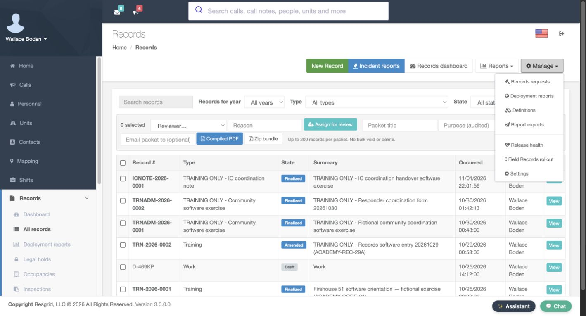
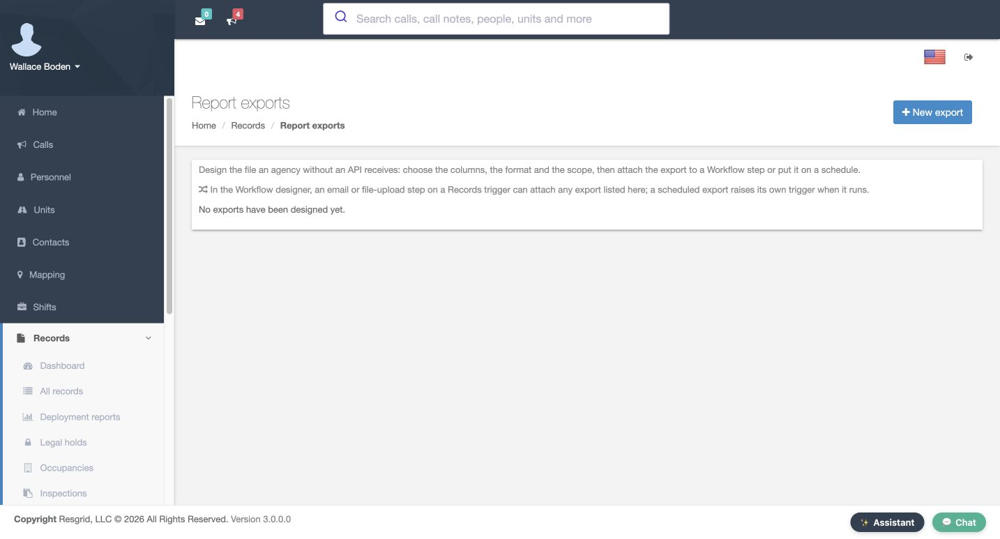
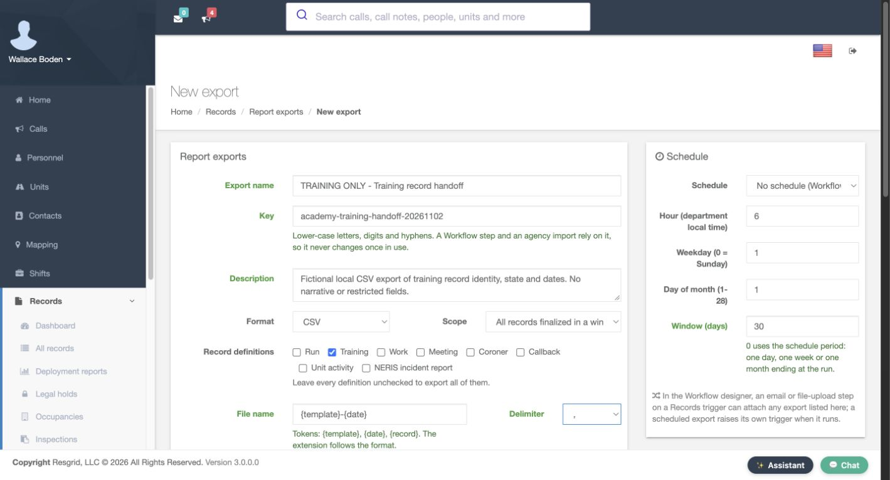
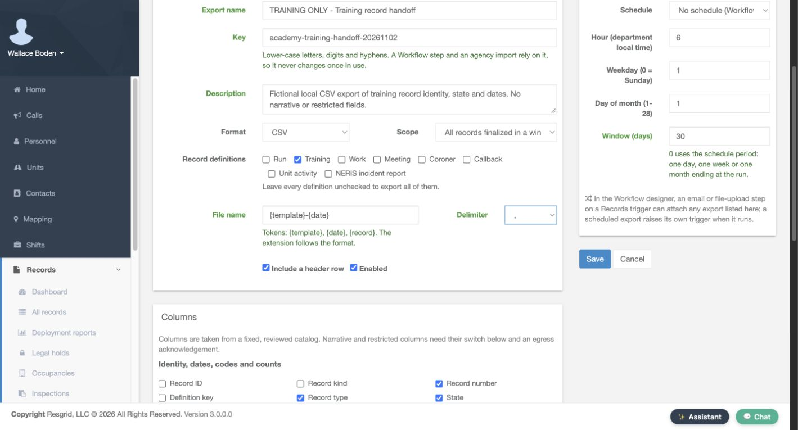
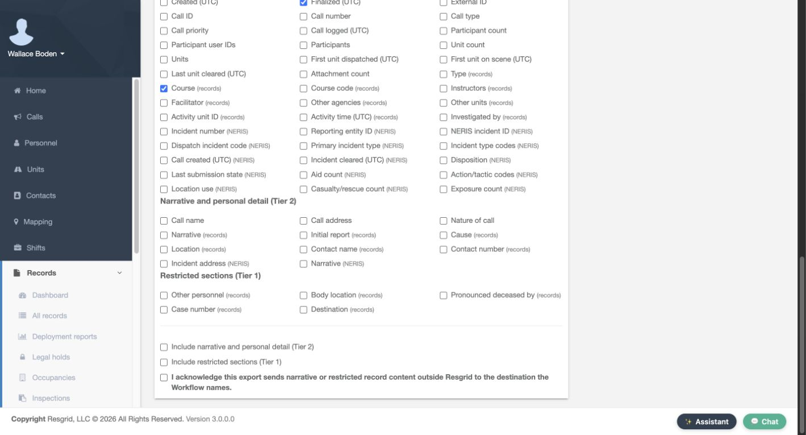
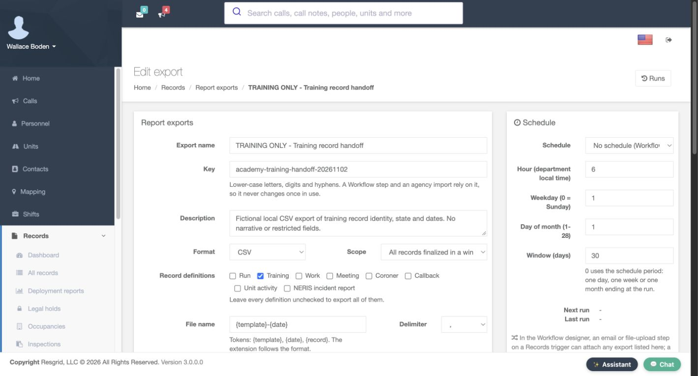
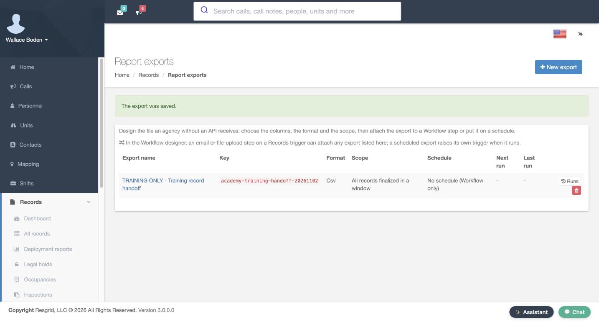
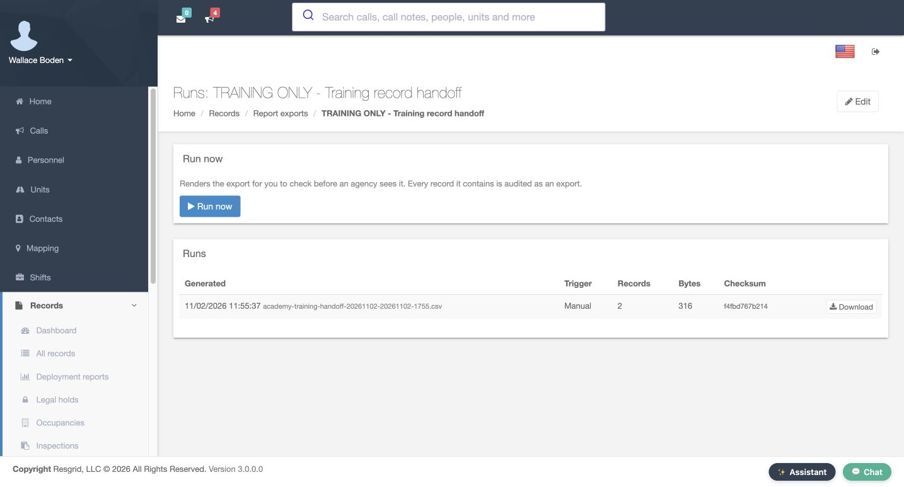
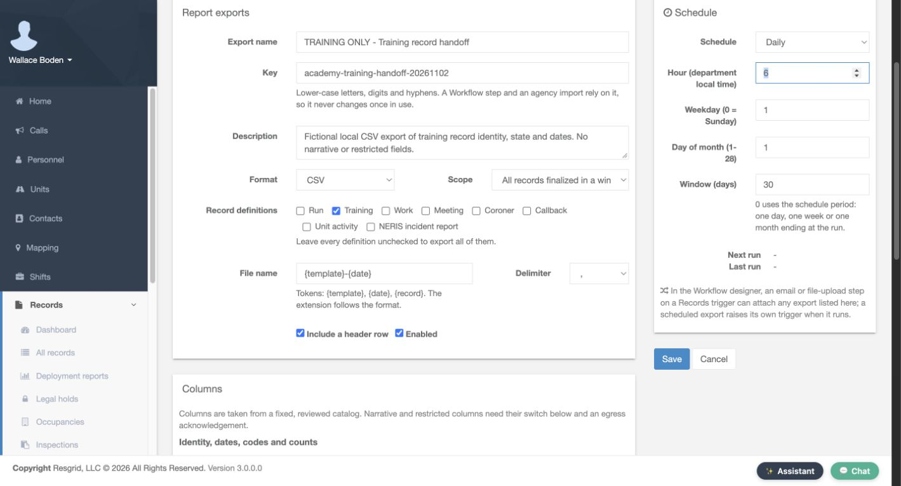

Core · Video walkthrough
Configure a Records CSV export and verify its runs and schedule
Build a six-column training-record export, verify a manual CSV, inspect the next scheduled run, and restore manual operation.
Before you begin
- Authorized Records administration and a separate fictional training department.
- Existing permitted finalized records for the selected definition.
Chapters
- Open report exports
- Name the export and give it a stable key
- Choose the scope and CSV layout
- Choose six specific columns
- Review the narrative and restricted-content controls
- Set the manual window and verify the saved template
- Run locally and inspect the recorded result
- Prepare and save a daily schedule
- Verify next run and restore manual operation
- Use a checked export for your department’s handoff
Watch the walkthrough
Step 1
Open report exports
From Records, open Manage and select Report exports. This area defines a repeatable output file: its columns, format and scope. The page also explains that exports can be attached to a Workflow step or placed on a schedule. This lesson configures and checks the file locally; it does not send an email or upload anything to an outside agency. Select New export to prepare a separate training-record handoff.


Practice
Open report exports
Step 2
Name the export and give it a stable key
Enter a meaningful Export name and a stable Key. The example is Training record handoff, with an academy training handoff key. The help requires lower-case letters, digits and hyphens, and explains that a Workflow step or agency import may rely on this key. Keep that relationship in mind before changing names in a live integration. Add a description of exactly what this file is intended to contain. Here the description explicitly limits the exercise to fictional training-record identity, state and dates.

Practice
Name the export and give it a stable key
Step 3
Choose the scope and CSV layout
Use C S V as the Format, and choose the window scope for finalized records. Check Training under Record definitions. The help says that leaving every definition unchecked would export all definitions, so select the intended scope deliberately. For File name, enter the template token followed by the date token, as shown. Keep the comma Delimiter, include a header row, and leave Enabled checked. These settings define the file layout that the receiving process will need to recognize.

Practice
Choose the scope and CSV layout
Step 4
Choose six specific columns
Review Columns rather than accepting an unnecessarily broad output. Select Record number, Record type, State, Duration in minutes, Finalized in U T C, and Course from records. The screenshot shows those six checks. Other identity, participant and incident fields remain unselected in this example. Choose the smallest useful set for your actual handoff and agree its meaning with the recipient. A consistent set of fields makes repeated exports easier to compare and import.
Practice
Choose six specific columns
Step 5
Review the narrative and restricted-content controls
Scroll through the narrative and restricted sections before saving. This exercise leaves all their column checkboxes unselected. It also leaves Include narrative and personal detail, Include restricted sections, and the acknowledgement about sending that content outside Resgrid unchecked. These are separate controls beneath the column catalog. Review them together with the selected columns and the intended Workflow destination when planning an actual integration. Our local file contains none of those narrative or restricted fields.

Practice
Review the narrative and restricted-content controls
Step 6
Set the manual window and verify the saved template
For the first test, use No schedule and set Window to thirty days. The help explains that zero instead uses the schedule period ending at the run. Select Save after reviewing the prepared settings. The saved template can be reopened with the same format, Training selection and thirty-day window. The Report exports index confirms The export was saved and lists the window scope with No schedule. Saving the template establishes the configuration; it does not prove that the resulting file contains the expected records.


Practice
Set the manual window and verify the saved template
Step 7
Run locally and inspect the recorded result
Open Runs for the template, then select Run now. The page says this renders the export for checking before an agency sees it, and audits every included record as an export. The completed run shows a Manual trigger, two records, three hundred sixteen bytes, a checksum and a Download link. Download the file and compare its headers and rows with the intended handoff. The retained exercise file has the six selected headers and two training records, including one amended record in this finalized-record window.

Practice
Run locally and inspect the recorded result
Step 8
Prepare and save a daily schedule
Return to Edit and change Schedule to Daily. Set Hour to six in department local time and keep the thirty-day window. The form also contains weekday and day-of-month controls for other schedule choices, but this exercise saves the Daily choice. Review the hour and window together, then select Save. Changing a schedule is a configuration step; the next screen will confirm the stored next-run time. We do not claim that an automatic run has already occurred.

Practice
Prepare and save a daily schedule
Step 9
Verify next run and restore manual operation
After saving, Next run shows November third at six in the morning. The index independently shows Daily and the same next-run value. That is the saved scheduling result for this dated training exercise. To leave the department without an active timer, reopen the template, choose No schedule, and select Save again. Reopening now shows No schedule with a dash for Next run. Verify that stored result instead of assuming an unsaved selection stopped the schedule.
Practice
Verify next run and restore manual operation
Step 10
Use a checked export for your department’s handoff
Use the same configuration and checking process across department types. Search-and-rescue teams, security companies, wildland contractors and industrial emergency teams can standardize their permitted record handoffs. Community paramedicine and mental health response teams can define an appropriate coordination or training export, as can fire and E M S departments. Start with the right definition and columns, check a manual file, and verify the schedule before relying on it. Delivery through a Workflow is a separate operation that must be configured and tested for the intended recipient.
Practice
Use a checked export for your department’s handoff
Examples for your department
- Fire / EMS
- Choose the appropriate department record definition and verify the matching output.
- Community response
- Choose the appropriate department record definition and verify the matching output.
- Search and rescue
- Choose the appropriate department record definition and verify the matching output.
- Security
- Choose the appropriate department record definition and verify the matching output.
- Wildland
- Choose the appropriate department record definition and verify the matching output.
- Industrial
- Choose the appropriate department record definition and verify the matching output.
Transcript
Download transcriptRead the complete transcript
Configure a Records CSV export and verify its runs and schedule Audience: Department administrators, Records managers, Department supervisors Open report exports From Records, open Manage and select Report exports. This area defines a repeatable output file: its columns, format and scope. The page also explains that exports can be attached to a Workflow step or placed on a schedule. This lesson configures and checks the file locally; it does not send an email or upload anything to an outside agency. Select New export to prepare a separate training-record handoff. Practice: Open report exports Name the export and give it a stable key Enter a meaningful Export name and a stable Key. The example is Training record handoff, with an academy training handoff key. The help requires lower-case letters, digits and hyphens, and explains that a Workflow step or agency import may rely on this key. Keep that relationship in mind before changing names in a live integration. Add a description of exactly what this file is intended to contain. Here the description explicitly limits the exercise to fictional training-record identity, state and dates. Practice: Name the export and give it a stable key Choose the scope and CSV layout Use C S V as the Format, and choose the window scope for finalized records. Check Training under Record definitions. The help says that leaving every definition unchecked would export all definitions, so select the intended scope deliberately. For File name, enter the template token followed by the date token, as shown. Keep the comma Delimiter, include a header row, and leave Enabled checked. These settings define the file layout that the receiving process will need to recognize. Practice: Choose the scope and CSV layout Choose six specific columns Review Columns rather than accepting an unnecessarily broad output. Select Record number, Record type, State, Duration in minutes, Finalized in U T C, and Course from records. The screenshot shows those six checks. Other identity, participant and incident fields remain unselected in this example. Choose the smallest useful set for your actual handoff and agree its meaning with the recipient. A consistent set of fields makes repeated exports easier to compare and import. Practice: Choose six specific columns Review the narrative and restricted-content controls Scroll through the narrative and restricted sections before saving. This exercise leaves all their column checkboxes unselected. It also leaves Include narrative and personal detail, Include restricted sections, and the acknowledgement about sending that content outside Resgrid unchecked. These are separate controls beneath the column catalog. Review them together with the selected columns and the intended Workflow destination when planning an actual integration. Our local file contains none of those narrative or restricted fields. Practice: Review the narrative and restricted-content controls Set the manual window and verify the saved template For the first test, use No schedule and set Window to thirty days. The help explains that zero instead uses the schedule period ending at the run. Select Save after reviewing the prepared settings. The saved template can be reopened with the same format, Training selection and thirty-day window. The Report exports index confirms The export was saved and lists the window scope with No schedule. Saving the template establishes the configuration; it does not prove that the resulting file contains the expected records. Practice: Set the manual window and verify the saved template Run locally and inspect the recorded result Open Runs for the template, then select Run now. The page says this renders the export for checking before an agency sees it, and audits every included record as an export. The completed run shows a Manual trigger, two records, three hundred sixteen bytes, a checksum and a Download link. Download the file and compare its headers and rows with the intended handoff. The retained exercise file has the six selected headers and two training records, including one amended record in this finalized-record window. Practice: Run locally and inspect the recorded result Prepare and save a daily schedule Return to Edit and change Schedule to Daily. Set Hour to six in department local time and keep the thirty-day window. The form also contains weekday and day-of-month controls for other schedule choices, but this exercise saves the Daily choice. Review the hour and window together, then select Save. Changing a schedule is a configuration step; the next screen will confirm the stored next-run time. We do not claim that an automatic run has already occurred. Practice: Prepare and save a daily schedule Verify next run and restore manual operation After saving, Next run shows November third at six in the morning. The index independently shows Daily and the same next-run value. That is the saved scheduling result for this dated training exercise. To leave the department without an active timer, reopen the template, choose No schedule, and select Save again. Reopening now shows No schedule with a dash for Next run. Verify that stored result instead of assuming an unsaved selection stopped the schedule. Practice: Verify next run and restore manual operation Use a checked export for your department’s handoff Use the same configuration and checking process across department types. Search-and-rescue teams, security companies, wildland contractors and industrial emergency teams can standardize their permitted record handoffs. Community paramedicine and mental health response teams can define an appropriate coordination or training export, as can fire and E M S departments. Start with the right definition and columns, check a manual file, and verify the schedule before relying on it. Delivery through a Workflow is a separate operation that must be configured and tested for the intended recipient. Practice: Use a checked export for your department’s handoff Examples for your department Fire / EMS: Choose the appropriate department record definition and verify the matching output. Community response: Choose the appropriate department record definition and verify the matching output. Search and rescue: Choose the appropriate department record definition and verify the matching output. Security: Choose the appropriate department record definition and verify the matching output. Wildland: Choose the appropriate department record definition and verify the matching output. Industrial: Choose the appropriate department record definition and verify the matching output.